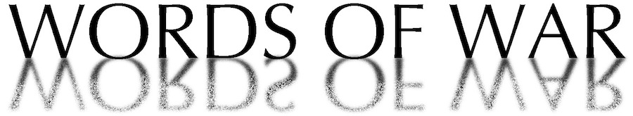

This work is licensed under a Creative Commons Attribution-NonCommercial-ShareAlike 3.0 Unported License.

Bill Clinton had a controversial relationship to the Vietnam War. Rather than having served like much of his generation, Clinton faced accusations of dodging the draft. As a result, Vietnam veterans largely did not originally support Clinton's presidency. Videos of his Memorial Day Speech at the Vietnam Veterans Memorial in Washington, D.C. show this relationship, as viewers can audibly hear veterans booing Clinton's speech at The Wall. As a result, Clinton does not focus on veteran sacrifice because he is concerned with repairing his relationship with Vietnam veterans. Therefore, his 1993 speech cements the historical memory of the Vietnam War created by the previous administrations.
We can easily see how Clinton takes a look to the future in his speech, moving away from the Vietnam War's place in history. "Today" is the largest word represented in the cloud. While words related to veteran sacrifice are present in the cloud, apologetic words are larger and more visible — "resolve" and "disagree" are two of the most prominent words in the cloud. "Men" and "women" are equally sized in the cloud because instead of noting specific instances of veteran sacrifice, like Reagan and Bush commonly did, Clinton generically acknowledges the service of all veterans.
The phrase net visualization shows how Clinton's words are separated by spaces within his speech. As demonstrated by the word cloud, "today" is one of the most prominently used words, and it is connected to words like "America" and "serve." This further differentiates Clinton's rhetoric from Bush and Reagan, separating service from veteran sacrifice and tying "America" to the present with the word "today."
The shift to Clinton's focus on the future is demonstrated with other phrases used throughout his speech at the Vietnam Veterans Memorial. Relationships between words like "national" and "security" or "unity" show an emphasis on his current duties as President of the United States. There are not phrases about history, and how to discuss the Vietnam War with other generations, but rather only a few phrases that mention that some did serve in Vietnam. Clinton's speech is not gendered because he has no reason to make it gendered — without discussions of veteran sacrifice and what occurs during war, there need not be a discussion of women's and men's roles in war.
This work is licensed under a Creative Commons Attribution-NonCommercial-ShareAlike 3.0 Unported License.